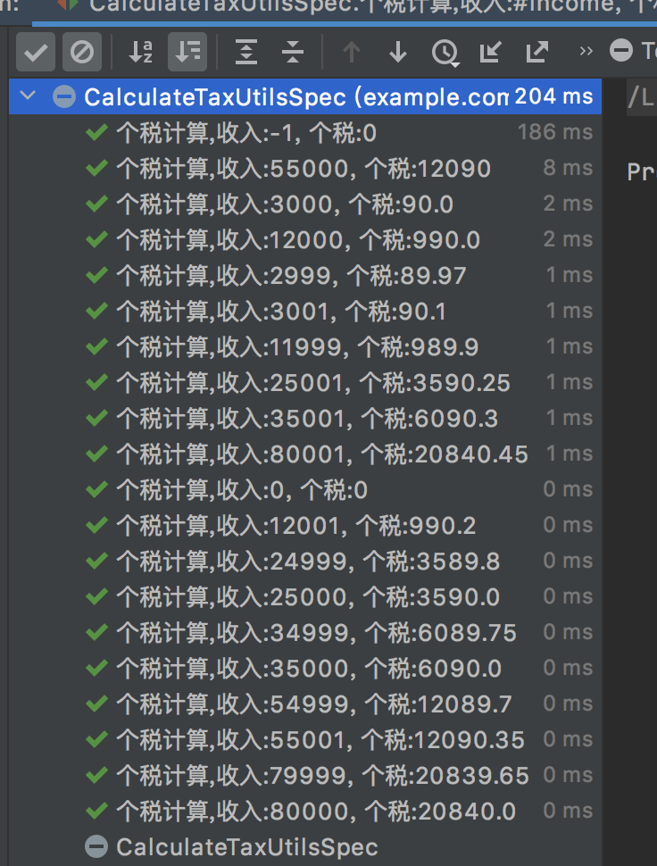
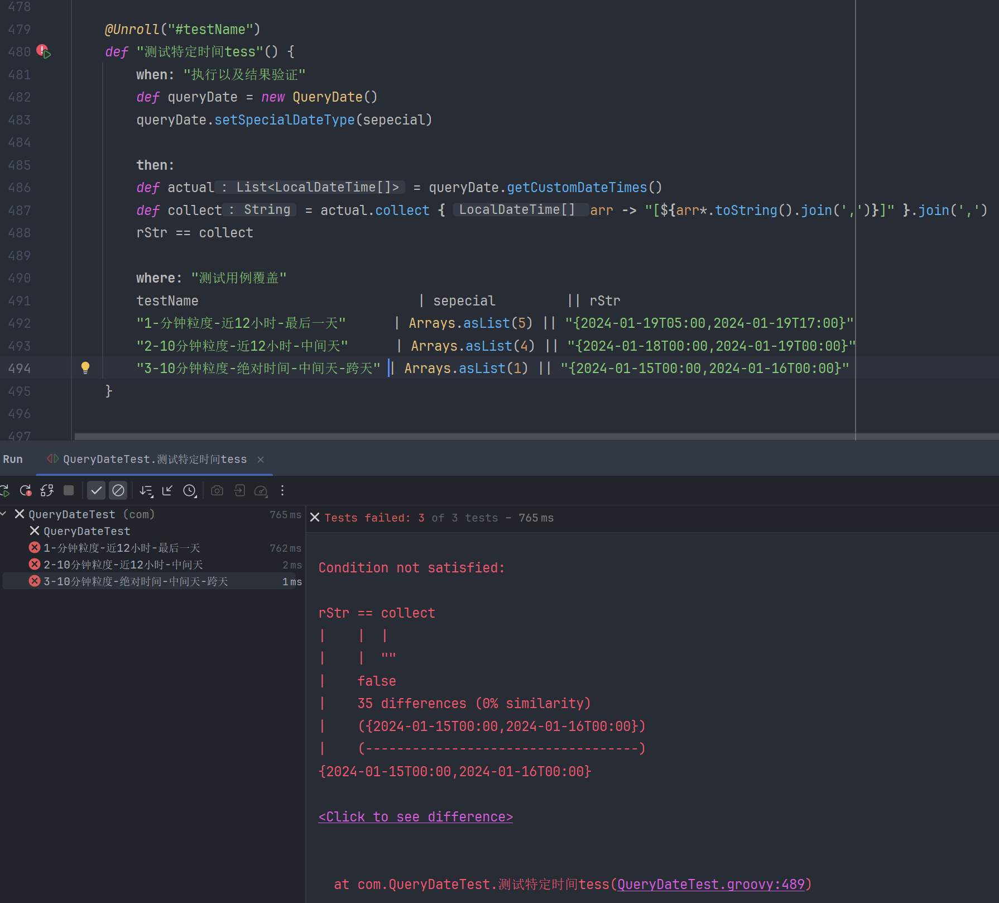

1. 介绍
1.1 Spock是什么？
Spock是一款国外优秀的测试框架，基于BDD （行为驱动开发）思想实现，功能非常强大。Spock结合Groovy动态语言的特点，提供了各种标签，并采用简单、通用、结构化的描述语言，让编写测试代码更加简洁、高效。官方的介绍
Spock是一个Java和Groovy`应用的测试和规范框架。之所以能够在众多测试框架中脱颖而出，是因为它优美而富有表现力的规范语言。Spock的灵感来自JUnit、RSpec、jMock、Mockito、Groovy、Scala、Vulcans。
简单来讲，Spock主要特点如下：
让测试代码更规范，内置多种标签来规范单元测试代码的语义，测试代码结构清晰，更具可读性，降低后期维护难度。
提供多种标签，比如：
given、when、then、expect、where、with、thrown……帮助我们应对复杂的测试场景。使用Groovy这种动态语言来编写测试代码，可以让我们编写的测试代码更简洁，适合敏捷开发，提高编写单元测试代码的效率。
遵从BDD （行为驱动开发）模式，有助于提升代码的质量。
IDE兼容性好，自带Mock功能。
Spock和JUnit、jMock、Mockito的区别在哪里？
总的来说，JUnit、jMock、Mockito都是相对独立的工具，只是针对不同的业务场景提供特定的解决方案。其中JUnit单纯用于测试，并不提供Mock功能。
我们的服务大部分是分布式微服务架构。服务与服务之间通常都是通过接口的方式进行交互。即使在同一个服务内也会分为多个模块，业务功能需要依赖下游接口的返回数据，才能继续后面的处理流程。这里的下游不限于接口，还包括中间件数据存储比如Squirrel、DB、MCC配置中心等等，所以如果想要测试自己的代码逻辑，就必须把这些依赖项Mock掉。因为如果下游接口不稳定可能会影响我们代码的测试结果，让下游接口返回指定的结果集（事先准备好的数据），这样才能验证我们的代码是否正确，是否符合逻辑结果的预期。
尽管jMock、Mockito提供了Mock功能，可以把接口等依赖屏蔽掉，但不能对静态方法Mock。虽然PowerMock、jMockit能够提供静态方法的Mock，但它们之间也需要配合（JUnit + Mockito PowerMock）使用，并且语法上比较繁琐。工具多了就会导致不同的人写出的单元测试代码“五花八门”，风格相差较大。
Spock通过提供规范性的描述，定义多种标签（given、when、then、where等），去描述代码“应该做什么”，“输入条件是什么”，“输出是否符合预期”，从语义层面规范了代码的编写。
Spock自带Mock功能，使用简单方便（也支持扩展其他Mock框架，比如PowerMock），再加上Groovy动态语言的强大语法，能写出简洁高效的测试代码，同时能方便直观地验证业务代码的行为流转，增强工程师对代码执行逻辑的可控性。
1.2 使用Spock解决单元测试开发中的痛点
如果在（if/else）分支很多的复杂场景下，编写单元测试代码的成本会变得非常高，正常的业务代码可能只有几十行，但为了测试这个功能覆盖大部分的分支场景，编写的测试代码可能远不止几十行。
尽管使用JUnit的@Parametered参数化注解或者DataProvider方式可以解决多数据分支问题，但不够直观，而且如果其中某一次分支测试Case出错了，它的报错信息也不够详尽。
这就需要一种编写测试用例高效、可读性强、占用工时少、维护成本低的测试框架。首先不能让业务人员排斥编写单元测试，更不能让工程师觉得写单元测试是在浪费时间。而且使用JUnit做测试工作量不算小。据初步统计，采用JUnit的话，它的测试代码行和业务代码行能到3:1。如果采用Spock作为测试框架的话，它的比例可缩减到1:1，能够大大提高编写测试用例的效率。
举个例子:
public double calc(double income) {
BigDecimal tax;
BigDecimal salary = BigDecimal.valueOf(income);
if (income <= 0) {
return 0;
}
if (income > 0 && income <= 3000) {
BigDecimal taxLevel = BigDecimal.valueOf(0.03);
tax = salary.multiply(taxLevel);
} else if (income > 3000 && income <= 12000) {
BigDecimal taxLevel = BigDecimal.valueOf(0.1);
BigDecimal base = BigDecimal.valueOf(210);
tax = salary.multiply(taxLevel).subtract(base);
} else if (income > 12000 && income <= 25000) {
BigDecimal taxLevel = BigDecimal.valueOf(0.2);
BigDecimal base = BigDecimal.valueOf(1410);
tax = salary.multiply(taxLevel).subtract(base);
} else if (income > 25000 && income <= 35000) {
BigDecimal taxLevel = BigDecimal.valueOf(0.25);
BigDecimal base = BigDecimal.valueOf(2660);
tax = salary.multiply(taxLevel).subtract(base);
} else if (income > 35000 && income <= 55000) {
BigDecimal taxLevel = BigDecimal.valueOf(0.3);
BigDecimal base = BigDecimal.valueOf(4410);
tax = salary.multiply(taxLevel).subtract(base);
} else if (income > 55000 && income <= 80000) {
BigDecimal taxLevel = BigDecimal.valueOf(0.35);
BigDecimal base = BigDecimal.valueOf(7160);
tax = salary.multiply(taxLevel).subtract(base);
} else {
BigDecimal taxLevel = BigDecimal.valueOf(0.45);
BigDecimal base = BigDecimal.valueOf(15160);
tax = salary.multiply(taxLevel).subtract(base);
}
return tax.setScale(2, BigDecimal.ROUND_HALF_UP).doubleValue();
}
能够看到上面的代码中有大量的if-else语句，Spock提供了where标签，可以让我们通过表格的方式来测试多种分支。
@Unroll
def "个税计算,收入:#income, 个税:#result"() {
expect: "when + then 的组合"
CalculateTaxUtils.calc(income) == result
where: "表格方式测试不同的分支逻辑"
income || result
-1 || 0
0 || 0
2999 || 89.97
3000 || 90.0
3001 || 90.1
11999 || 989.9
12000 || 990.0
12001 || 990.2
24999 || 3589.8
25000 || 3590.0
25001 || 3590.25
34999 || 6089.75
35000 || 6090.0
35001 || 6090.3
54999 || 12089.7
55000 || 12090
55001 || 12090.35
79999 || 20839.65
80000 || 20840.0
80001 || 20840.45
}

由此可见, 使用spock框架比junit更能节省代码, 但是spock是使用的是Groovy语法, 所以需要学习一下它的语法, 因为Groovy是基于java虚拟机的语言, 所以也能直接写java代码(不过java语法繁琐, 用java的话和用junit差不多了)
2. 使用篇
2.1 引入pom
<!--引入 groovy 依赖-->
<dependency>
<groupId>org.codehaus.groovy</groupId>
<artifactId>groovy-all</artifactId>
<version>2.4.15</version>
<scope>test</scope>
</dependency>
<!--引入spock 与 spring 集成包-->
<dependency>
<groupId>org.spockframework</groupId>
<artifactId>spock-spring</artifactId>
<version>1.2-groovy-2.4</version>
<scope>test</scope>
</dependency>
<!-- Spock自带Mock功能，所以我们可以来Mock非静态方法。但是遇到静态方法时，我们需要导入powermock -->
<!--powermock -->
<dependency>
<groupId>org.powermock</groupId>
<artifactId>powermock-api-mockito2</artifactId>
<version>2.0.0</version>
<scope>test</scope>
</dependency>
<dependency>
<groupId>org.powermock</groupId>
<artifactId>powermock-module-junit4</artifactId>
<version>2.0.0</version>
<scope>test</scope>
</dependency>
2.2 使用案例
import org.mockito.InjectMocks
import org.mockito.Matchers
import org.mockito.Mock
import org.mockito.MockitoAnnotations
import org.slf4j.Logger
import spock.lang.Specification
import spock.lang.Unroll
import java.time.LocalDate
import java.time.LocalDateTime
import java.time.Month
import java.time.temporal.ChronoUnit
import static org.mockito.Mockito.when
class QueryDateTest extends Specification {
@Unroll("#testName")
def "测试特定时间tess"() {
when: "执行以及结果验证"
def queryDate = new QueryDate()
queryDate.setSpecialDateType(sepecial)
// 赋值, << 表示(集合类型)右边赋值给左边 (Groovy语法)
// queryDate.getCustomDateTimes() << [time1, time2]
then:
def actual = queryDate.getCustomDateTimes()
def collect = actual.collect { arr -> "[${arr*.toString().join(',')}]" }.join(',')
rStr == collect
where: "测试用例覆盖"
testName | sepecial || rStr
"1-分钟粒度-近12小时-最后一天" | Arrays.asList(5) || "{2024-01-19T05:00,2024-01-19T17:00}"
"2-10分钟粒度-近12小时-中间天" | Arrays.asList(4) || "{2024-01-18T00:00,2024-01-19T00:00}"
"3-10分钟粒度-绝对时间-中间天-跨天" | Arrays.asList(1) || "{2024-01-15T00:00,2024-01-16T00:00}"
}
}
结果如下:

解释:
@Unroll , 可以让where中的每一个案例当成一个单测, 如此可以在输出结果时,分开查看当前用例执行情况 (如果不加, 则合并一起展示)
#testName是一个变量, 在where中复制, 表示, 当前用例的名称 (参见输出结果)测试特定时间tess表示这个单测方法的名称 (其实java也允许中文函数名称)when,then,where是spock的关键字when: 表示当如何时, 可以做一些赋值,定义之类的工作then: 表示然后如何, 可以做业务逻辑的操作where: 表示条件如何, 这里就是写大量条件的地方
当然, 你也可以把
when和then合并, 也可以不要where, 把输入条件全部写在then中 (这就和juint一样了), 后面再介绍一下还有其他关键字和组合用法def和collect{}是 Groovy语法where后面是一个类似表格的东西, 里面就是入参, 第一行是定义变量名, 这里的变量名可以再when和then中使用, 多个列使用|单竖线隔开，||双竖线区分输入和输出变量，即左边是输入值，右边是输出值 (其实全部写成 || 也可以)(此处的用法是, 入参和期望结果都是变量形式)格式:
输入参数1 | 输入参数2 || 输出结果1 | 输出结果2
2.3 分块(关键字)
| 分块 | 替换 | 功能 | 说明 |
|---|---|---|---|
| given | setup | 初始化函数、MOCK | 非必要 |
| when | expect | 执行待测试的函数 | when 和 then 必须成对出现 |
| then | expect | 验证函数结果 | when 和 then 可以被 expect 替换 |
| where | 多套测试数据的检测 | spock的特性功能 | |
| and | 对其余块进行分隔说明 | 非必要 |
Spock单元测试框架介绍以及在美团优选的实践 - 美团技术团队 (meituan.com)